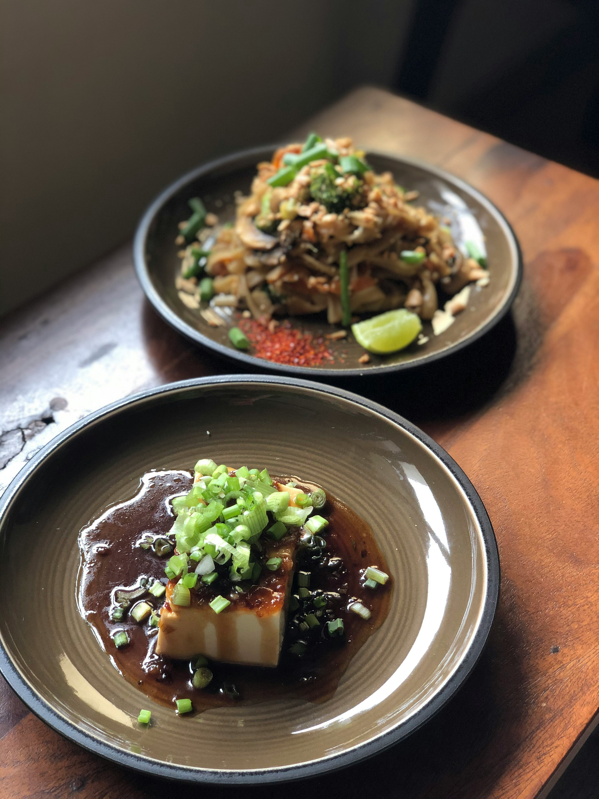

Specialties
RECIPES
01.
Traditional Burmese Tofu salad
Ingredients
- 1 block of chickpea(Firm)
- 1 cup of shredded cabbages
- 1/2 teaspoon of sugar
- 2 teaspoons of Tamarind paste
- 1 teaspoon of fish sauce
- 1 teaspoon of crispy garlic oil
- 1 teaspoon of chili oil
- 1/2 teaspoon of chili powder>
- 1 teaspoon of roasted chickpea powder
- 2 cilantros chopped(optional for garnish)
Instructions
- Prepare the chickpea tofu
- Drain and press the chickpea tofu block to remove excess moisture.
- Cut the tofu info thin sliced or as you desire. (Yes, it is okay to eat the tofu without cooking because it's already cooked.)
- Combine tofu and all the ingredients in the large bow and mix thoroughly.
- Serve
- Garnish with cilantros on top (if desired)
- Serve with some white rice to get the full flavor of Burmese traditional snacks or Breakfast in some region.
- Drain and press the chickpea tofu block to remove excess moisture.
- Cut the tofu info thin sliced or as you desire. (Yes, it is okay to eat the tofu without cooking because it's already cooked.)
- Combine tofu and all the ingredients in the large bow and mix thoroughly.
- Garnish with cilantros on top (if desired)
- Serve with some white rice to get the full flavor of Burmese traditional snacks or Breakfast in some region.
02.
Traditional Burmese Tofu snack
Ingredients
- 1 block of tofu(firm)
- oil( Vegetable oil is perfect for frying because it has a high smoke point.)
Instructions
- Prepare the chickpea tofu
- Drain and press the chickpea tofu block to remove excess moisture.
- Cut the tofu into 8 equal pieces, each about 1/4 inch thick and cut into half.
- Pat each piece of tofu dry with a cotton cloth or paper towels.
- Cook the tofu
- Heat the vegetable oil in pot over meadium- high heat.
- Add the tofu pieces one by one to the pot. Be sure not to crowd them, so they don't stick to each other. Turn down the heat to medium and cook for about 4 to 5 mintues, until the bottom turns crunchy and golden brown.
- Serve
- Transfer the cooked tofu to a serving plate.
- Can dip with any type of sauce as you desire but for traditional taste best to serve with tamarind chili sauce. ( Tamarind Chili Sauce Recepie in Different layout)
- Storage
- You can refrigerate the fried tofu for a week.
- If you have airfryer, put them into the fryer and fry for 400C for 2 minutes each side and you will get same cripsy as the day you fried them.
- Drain and press the chickpea tofu block to remove excess moisture.
- Cut the tofu into 8 equal pieces, each about 1/4 inch thick and cut into half.
- Pat each piece of tofu dry with a cotton cloth or paper towels.
- Heat the vegetable oil in pot over meadium- high heat.
- Add the tofu pieces one by one to the pot. Be sure not to crowd them, so they don't stick to each other. Turn down the heat to medium and cook for about 4 to 5 mintues, until the bottom turns crunchy and golden brown.
- Transfer the cooked tofu to a serving plate.
- Can dip with any type of sauce as you desire but for traditional taste best to serve with tamarind chili sauce. ( Tamarind Chili Sauce Recepie in Different layout)
- You can refrigerate the fried tofu for a week.
- If you have airfryer, put them into the fryer and fry for 400C for 2 minutes each side and you will get same cripsy as the day you fried them.
